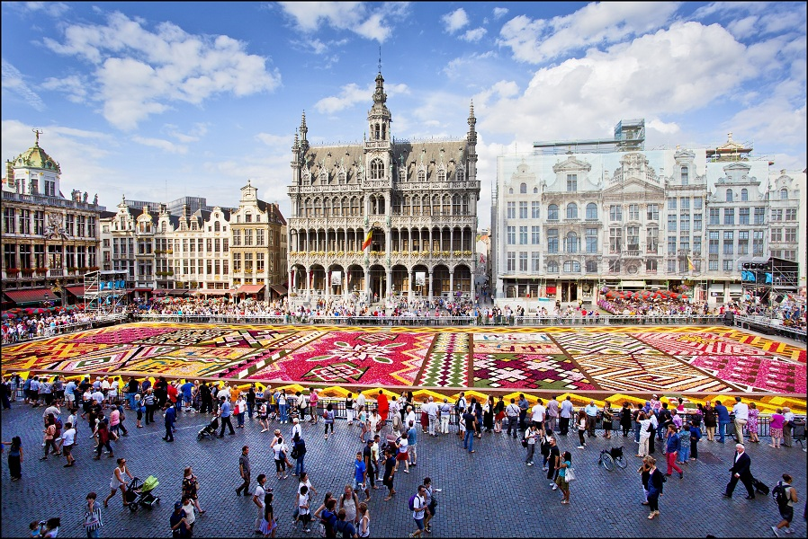
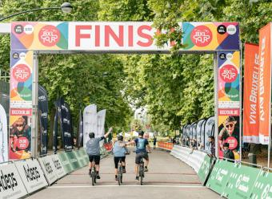
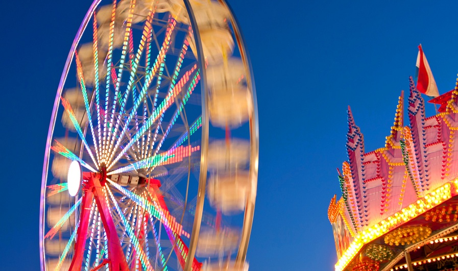
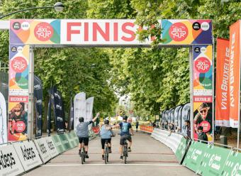
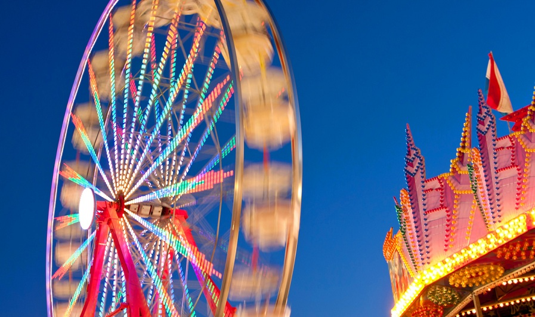

Bruxelles, une ville en mouvement
La Compagnie des Nouveaux Disparus' va installer ses décors berbères dans le Bois de la Cambre pour y créer un véritable village nomade éphémère. Durant 4 jours, du jeudi 17 au dimanche 20 août 2023, un festival de théâtre de rue, gratuit, au Bois de la Cambre. Durant 4 jours, le public va pouvoir découvrir, gratuitement, des représentations théâtrales aux accents métissés
Actualités
Evénements
La Ville de Bruxelles organise ou accueille de nombreux évènements qui ponctuent l'année.
 




Mes démarches en ligne
Demande ou renouvellement de papiers officiels: carte d'identité, passeport, demande de logement ou pour tout autre services: Veuillez cliquez sur le lien ci dessous
Accédez à mes démarches en ligne